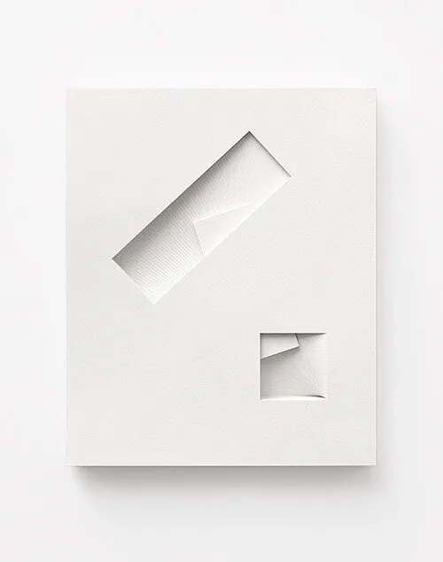
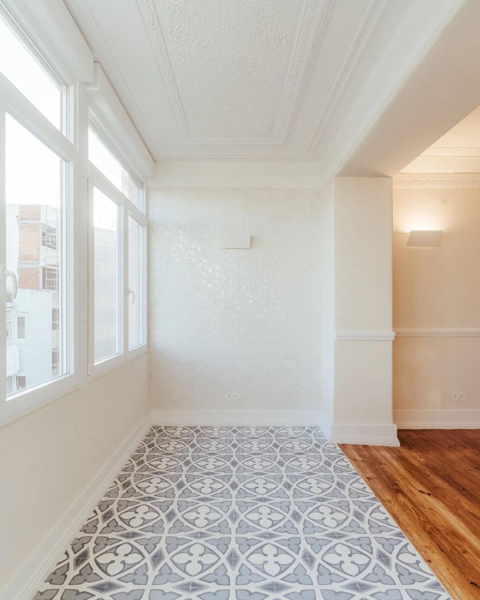
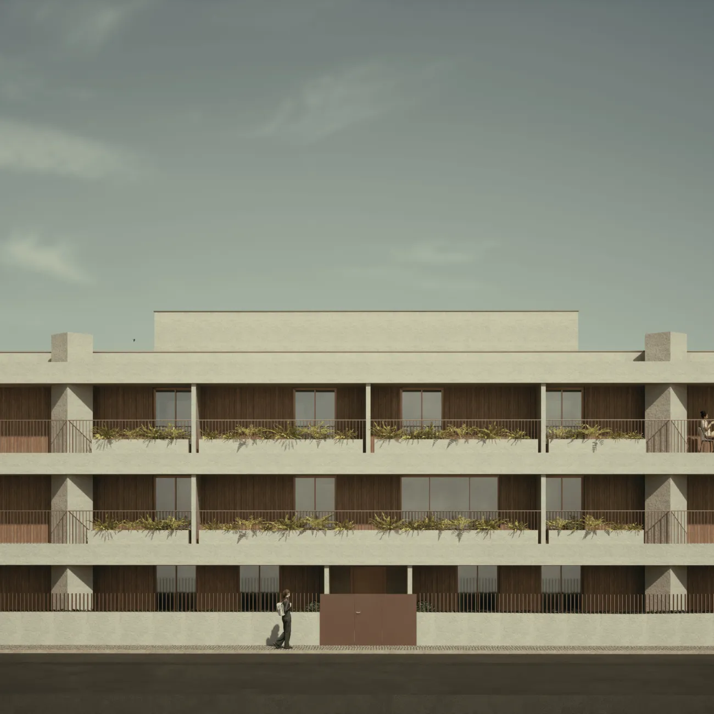

O nosso atelier é o resultado de um percurso marcado pela excelência académica e pela colaboração com figuras de relevo no panorama do design internacional. Com uma formação sólida pela Universidade Lusíada de Lisboa e um Mestrado em Arquitectura e Urbanismo pela Université Libre de Bruxelles (ULB, La Cambre), Tiago R. Correia transpôs para o atelier uma visão cosmopolita e técnica que define cada um dos nossos projectos.
Desde 2014, desenvolvemos uma prática baseada na investigação contínua e na experimentação, onde a arquitectura não é apenas uma construção, mas uma resposta escultórica e funcional ao contexto e às necessidades do cliente.
Acreditamos em soluções minimalistas que procuram a essência dos materiais e da luz. A nossa arquitectura privilegia a honestidade construtiva, eliminando o supérfluo para revelar a verdadeira qualidade dos espaços.
Inspiramo-nos na herança da arquitectura portuguesa, mas aplicamos um olhar contemporâneo, influenciado por colaborações artísticas de renome e uma prática profundamente enraizada na investigação.
Cada projecto é uma curadoria de detalhes. Da escala urbana ao design de produto, abordamos todas as escalas com o mesmo nível de rigor e dedicação ao pormenor.

Somos especialistas em tecnologia BIM (Building Information Modeling), o que nos coloca na linha da frente da eficiência no sector da Arquitectura em Portugal. Projectar em BIM significa que cada edifício é construído totalmente em 3D, com elevado rigor antes de chegar à fase de construção.

Um portfólio diversificado que abrange desde o planeamento urbano ao design de produto, passando pela reabilitação de edifícios históricos e criação de arquitectura de luxo.
Traduzimos a sua visão em espaços que superam expectativas. Cada cliente é único e merece uma abordagem personalizada, baseada na confiança e no conhecimento técnico.
Desde o estudo prévio ao licenciamento e acompanhamento de obra. Uma parceria completa que garante a qualidade construtiva em cada fase do processo.
A arquitectura é o cenário da nossa vida. Desenhamos os palcos onde o seu futuro acontece.
Fale com o arquitecto